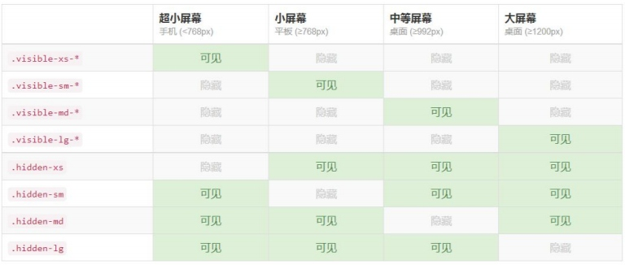

本节课我们主要学习一下 Bootstrap 的辅组类和响应式工具，辅助类提供了一组类来辅
组页面设计，而响应式工具则利用媒体查询显示或隐藏某些内容。
Bootstrap 在布局方面提供了一些细小的辅组样式，用于文字颜色以及背景色的设置、
显示关闭图标等等。
1.情景文本颜色
| 样式名 | 描述 |
|---|---|
| text-muted | 柔和灰 |
| text-primary | 主要蓝 |
| text-success | 成功绿 |
| text-info | 信息蓝 |
| text-warning | 警告黄 |
| text-danger | 危险红 |
<!--各种色调的字体-->
<p class="text-muted">Bootstrap 鲲鹏五班教程</p>
<p class="text-primary">Bootstrap 鲲鹏五班教程</p>
<p class="text-success">Bootstrap 鲲鹏五班教程</p>
<p class="text-info">Bootstrap 鲲鹏五班教程</p>
<p class="text-warning">Bootstrap 鲲鹏五班教程</p>
<p class="text-danger">Bootstrap 鲲鹏五班教程</p>
2.情景背景色
| 样式名 | 描述 |
|---|---|
| bg-primary | 主要蓝 |
| bg-success | 成功绿 |
| bg-info | 信息蓝 |
| bg-warning | 警告黄 |
| bg-danger | 危险红 |
<!--各种色调的背景-->
<p class="bg-primary">Bootstrap 鲲鹏五班教程</p>
<p class="bg-success">Bootstrap 鲲鹏五班教程</p>
<p class="bg-info">Bootstrap 鲲鹏五班教程</p>
<p class="bg-warning">Bootstrap 鲲鹏五班教程</p>
<p class="bg-danger">Bootstrap 鲲鹏五班教程</p>
3.关闭按钮
<button type="button" class="close">×</button>
4.三角符号
<span class="caret"></span>
5.快速浮动
<div class="pull-left">左边</div>
<div class="pull-right">右边</div>
注：这个浮动其实就是 float，只不过使用了!important 加强了优先级。
6.块级居中
<div class="center-block">居中</div>
注：就是 margin:x auto；并且设置了 display:block;。
7.清理浮动
<div class="clearfix"></div>
注：这个 div 可以放在需要清理浮动区块的前面即可。
8.显示和隐藏
<!-- !important 如果有周级效果,加强 -->
<div class="show">show</div>
<div class="hidden">hidden</div>
在媒体查询时，针对不同的屏幕大小，有时需要显示和隐藏部分内容。响应式工具类，
就提供了这种解决方案(显示与隐藏 *:要显示成什么?inline/block等效果.)。
//超小屏幕激活显示
<div class="visible-xs-block">Bootstrap</div>
//超小屏幕激活隐藏
<div class="hidden-xs">Bootstrap</div>
注：对于显示的内容，有三种变体，分别为：block、inline-block、inline。要注意它与CSS中display属性的的区别.